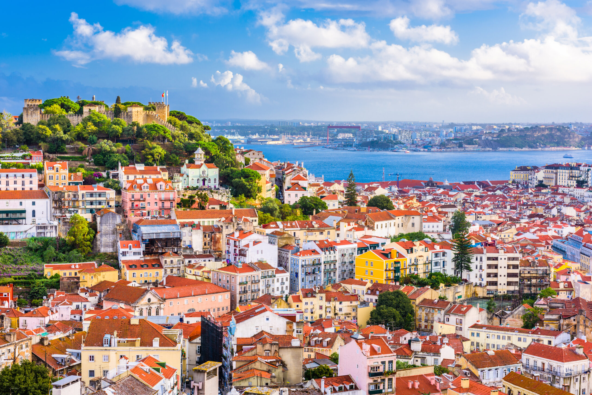
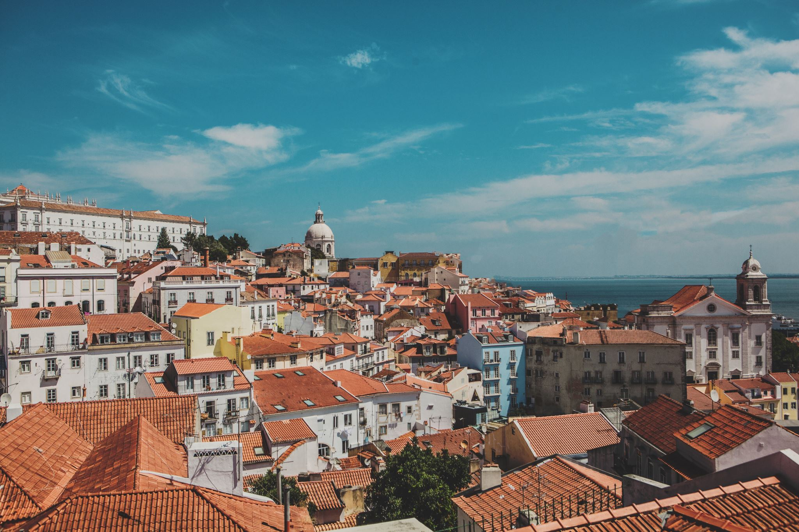
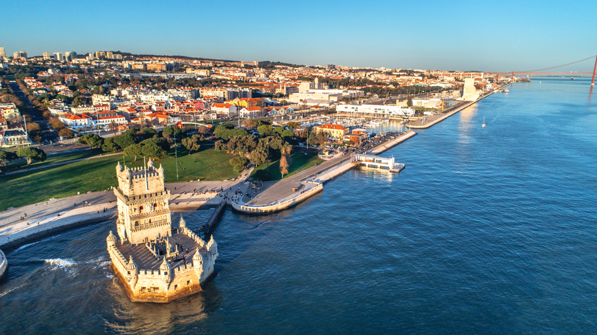
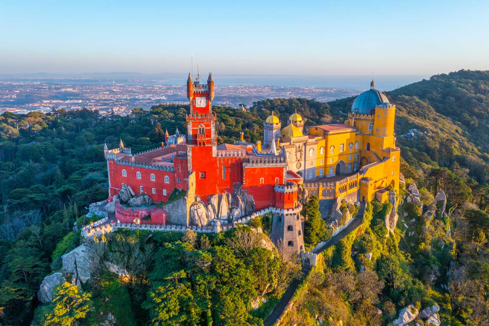
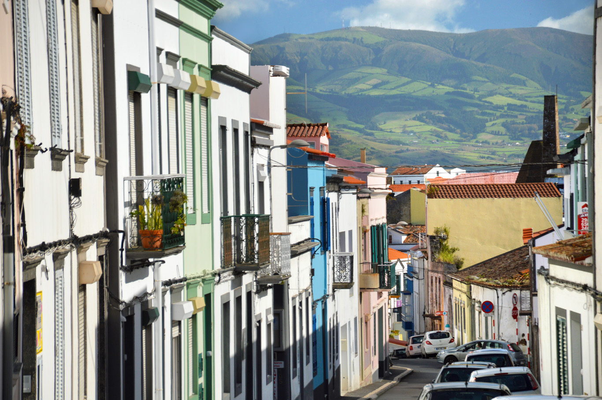
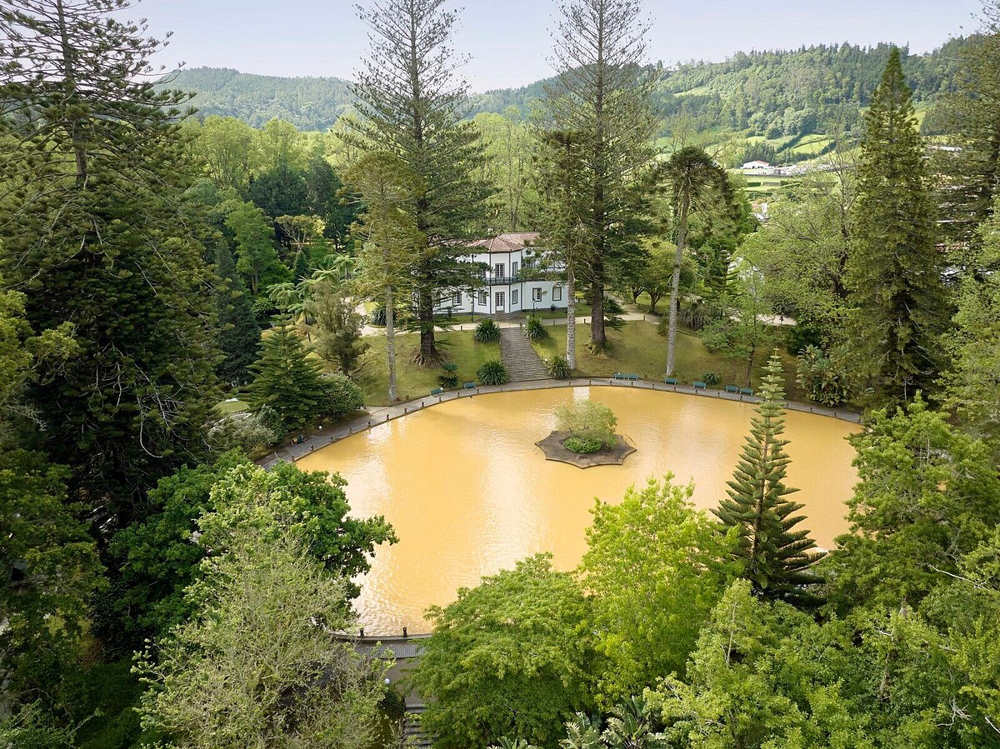
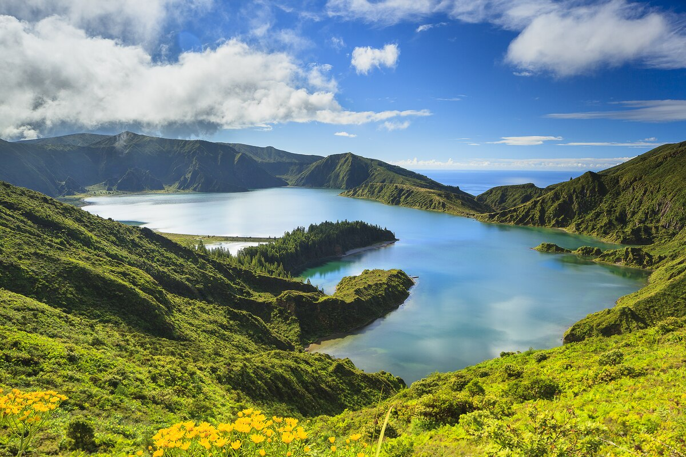
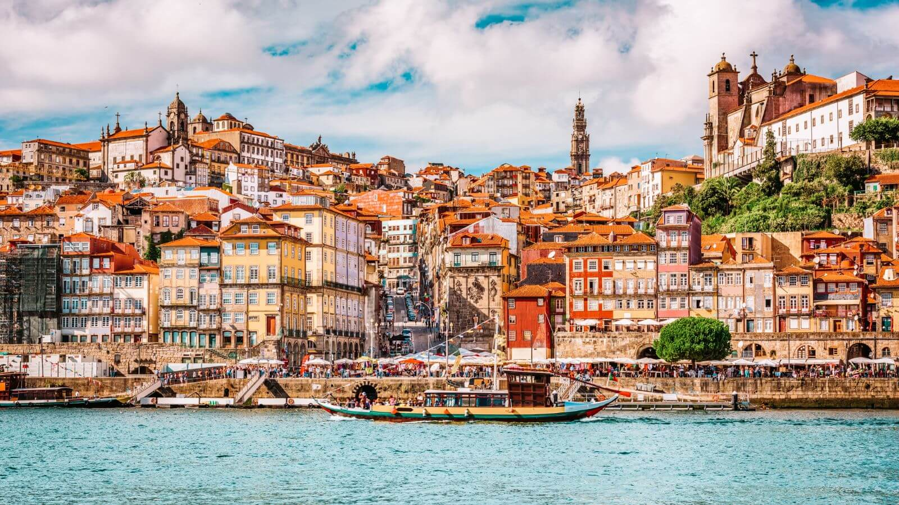
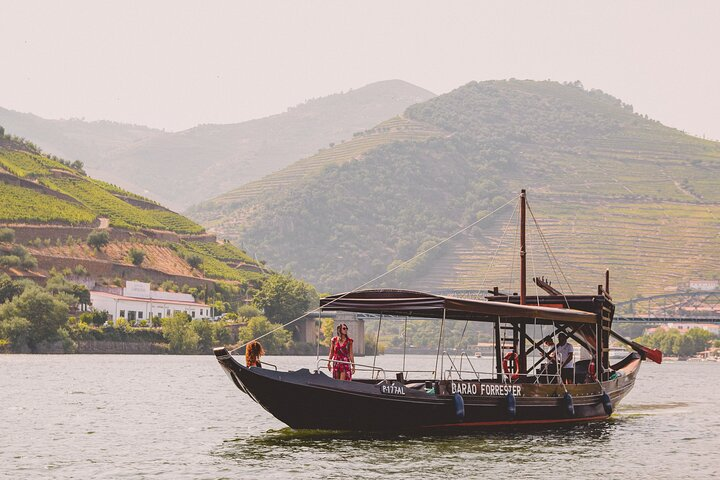

Day 1: Lisbon — Alfama
- Memmo Alfama (terrace pool with Tagus view)
- Castelo de São Jorge for the city panorama
- Tram 28 from Martim Moniz
- Seafood dinner at Cervejaria Ramiro
- Ginjinha nightcap at A Ginjinha

Lisbon, Sintra, a volcanic Azores stop, and Porto + Douro wine country.
Stops: Lisbon · Sintra · São Miguel · Porto · Douro Valley
Temp: 70–80°F
Lisbon old neighborhoods + Sintra day trip + a volcanic stop in the Azores + Porto and the Douro. 8 days, mostly walkable. ~70–80°F.







StayThe Yeatman
